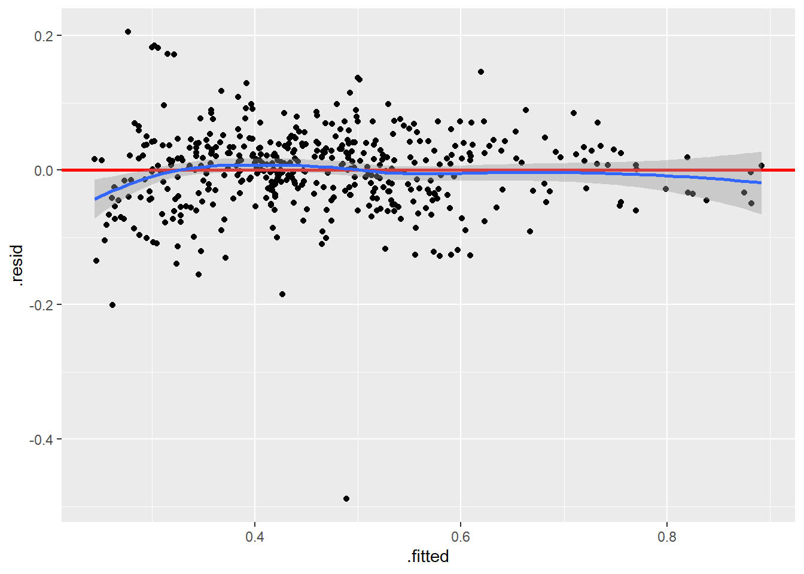
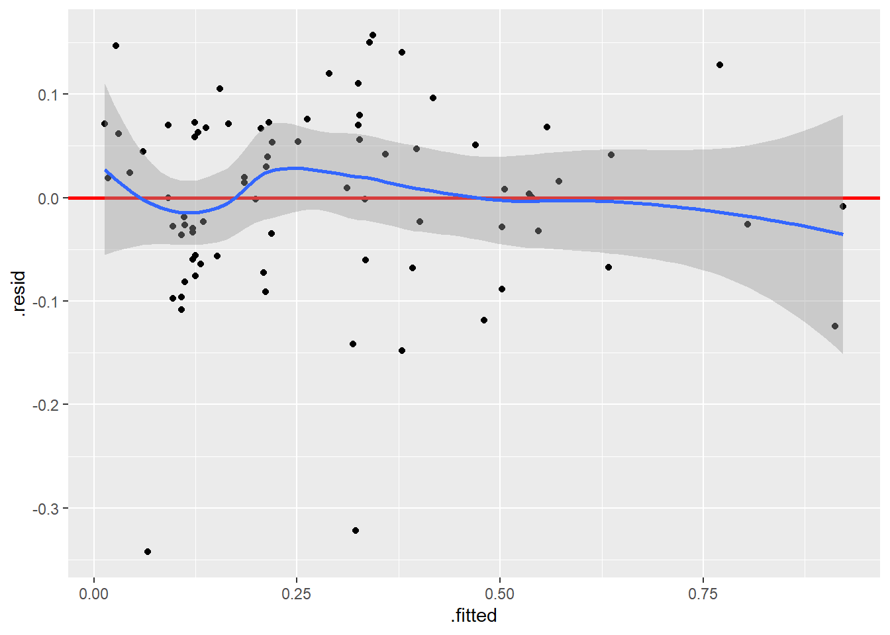

Q3. How do different car features affect depreciation ?
We will first filter our data to only include listings that have a value for new.price. Then we create a variable rel_dep for all of our datasets which will be the depreciation the car has experienced relative to its new price. We prefer this over simple depreciation (new price - actual price) because that variable would be a lot greater when the new price of the vehicle is large, which could bias our tests.
Code
# Libraries + datasetslibrary(tidyverse)library(corrplot)library(MASS)setwd("~/GitHub/Data_science/cleaned-data")golf <-read.csv("golf_models_data.csv")audi <-read.csv("audi_models_data.csv")skoda <-read.csv("skoda_models_data.csv")volvo <-read.csv("volvo_models_data.csv")toyota <-read.csv("toyota_models_data.csv")golf <- golf |>filter(!is.na(new.price))audi <- audi |>filter(!is.na(new.price))skoda <- skoda |>filter(!is.na(new.price))volvo <- volvo |>filter(!is.na(new.price))toyota <- toyota |>filter(!is.na(new.price))# We create the depreciation variables# absolute depreciation will be a lot greater when the new price of the vehicle is large, which could bias our tests. To resolve this, we will create a variable rel_dep which is relative depreciation.golf$rel_dep <-1- golf$price/golf$new.priceaudi$rel_dep <-1- audi$price/audi$new.priceskoda$rel_dep <-1- skoda$price/skoda$new.pricevolvo$rel_dep <-1- volvo$price/volvo$new.pricetoyota$rel_dep <-1- toyota$price/toyota$new.price
rel_dep will be our dependent variable. We will make a regression model that includes all of our variables then do a stepwise regression (backward) to remove non significant variables, in order to find the optimal models.
Code
# golfgolf_model1 <-lm(golf$rel_dep ~ golf$kilometers + golf$kilometers.squared + golf$vehicle.age + golf$vehicle.age.squared + golf$power + golf$expertise + golf$warranty + golf$wagon + golf$cabriolet + golf$diesel + golf$hybrid + golf$natural.gas + golf$manual + golf$awd)summary(golf_model1)# stepwise regressiongolf_model2 <-stepAIC(golf_model1, direction ="backward")summary(golf_model2)# we remove variables not significant at alpha = 0.01golf_model3 <-lm(golf$rel_dep ~ golf$kilometers + golf$kilometers.squared + golf$vehicle.age + golf$vehicle.age.squared + golf$power + golf$diesel)summary(golf_model3)# we remove diesel (not significant)golf_model3 <-lm(golf$rel_dep ~ golf$kilometers + golf$kilometers.squared + golf$vehicle.age + golf$vehicle.age.squared + golf$power)summary(golf_model3)# audiaudi_model1 <-lm(audi$rel_dep ~ audi$kilometers + audi$kilometers.squared + audi$vehicle.age + audi$vehicle.age.squared + audi$power + audi$consumption + audi$expertise + audi$warranty + audi$cabriolet + audi$coupe + audi$diesel + audi$hybrid + audi$natural.gas + audi$manual + audi$awd)summary(audi_model1)# stepwise regressionaudi_model2 <-stepAIC(audi_model1, direction ="backward")summary(audi_model2)# we remove variables not significant at alpha = 0.01audi_model3 <-lm(audi$rel_dep ~ audi$kilometers + audi$kilometers.squared + audi$vehicle.age + audi$manual)summary(audi_model3)# skodaskoda_model1 <-lm(skoda$rel_dep ~ skoda$kilometers + skoda$kilometers.squared + skoda$vehicle.age + skoda$vehicle.age.squared + skoda$power + skoda$consumption + skoda$expertise + skoda$warranty + skoda$sedan + skoda$cabriolet + skoda$suv + skoda$diesel + skoda$hybrid + skoda$natural.gas + skoda$manual + skoda$awd)summary(skoda_model1)# stepwise regressionskoda_model2 <-stepAIC(skoda_model1, direction ="backward")summary(skoda_model2)# we remove variables not significant at alpha = 0.01skoda_model3 <-lm(skoda$rel_dep ~ skoda$kilometers + skoda$vehicle.age + skoda$diesel + skoda$hybrid)summary(skoda_model3)# volvovolvo_model1 <-lm(volvo$price ~ volvo$kilometers + volvo$kilometers.squared + volvo$vehicle.age + volvo$vehicle.age.squared + volvo$power + volvo$consumption + volvo$expertise + volvo$warranty + volvo$diesel + volvo$hybrid + volvo$manual + volvo$fwd)summary(volvo_model1)# stepwise regressionvolvo_model2 <-stepAIC(volvo_model1, direction ="backward")summary(volvo_model2)# we remove variables not significant at alpha = 0.01volvo_model3 <-lm(volvo$rel_dep ~ volvo$kilometers + volvo$kilometers.squared + volvo$vehicle.age + volvo$vehicle.age.squared + volvo$power)summary(volvo_model3)# we remove vehicle.age.squared and power (not significant)volvo_model3 <-lm(volvo$rel_dep ~ volvo$kilometers + volvo$kilometers.squared + volvo$vehicle.age)summary(volvo_model3)#toyotatoyota_model1 <-lm(toyota$rel_dep ~ toyota$kilometers + toyota$kilometers.squared + toyota$vehicle.age + toyota$vehicle.age.squared + toyota$power + toyota$expertise + toyota$warranty + toyota$sedan + toyota$manual + toyota$awd)summary(toyota_model1)# stepwise regressiontoyota_model2 <-stepAIC(toyota_model1, direction ="backward")summary(toyota_model2)# we remove variables not significant at alpha = 0.01toyota_model3 <-lm(toyota$rel_dep ~ toyota$vehicle.age + toyota$power)summary(toyota_model3)## toyota does not have many observations, so this model is probably not accurate.# continue this by looking at what is in q1
Now we have found our optimal regression models, we can have a look at their summaries and residuals vs fitted values plots.
ggplot(volvo_model3, aes(x = .fitted, y = .resid)) +geom_point() +geom_hline(yintercept =0, color ="red", linewidth =1) +geom_smooth()

Code
summary(volvo_model3)
Call:
lm(formula = volvo$rel_dep ~ volvo$kilometers + volvo$kilometers.squared +
volvo$vehicle.age)
Residuals:
Min 1Q Median 3Q Max
-0.48920 -0.03385 0.00644 0.03465 0.20551
Coefficients:
Estimate Std. Error t value Pr(>|t|)
(Intercept) 2.192e-01 7.653e-03 28.640 < 2e-16 ***
volvo$kilometers 2.123e-06 2.008e-07 10.571 < 2e-16 ***
volvo$kilometers.squared -4.278e-12 8.585e-13 -4.983 8.91e-07 ***
volvo$vehicle.age 8.565e-05 4.783e-06 17.908 < 2e-16 ***
---
Signif. codes: 0 '***' 0.001 '**' 0.01 '*' 0.05 '.' 0.1 ' ' 1
Residual standard error: 0.06118 on 454 degrees of freedom
Multiple R-squared: 0.814, Adjusted R-squared: 0.8128
F-statistic: 662.4 on 3 and 454 DF, p-value: < 2.2e-16
Code
ggplot(toyota_model3, aes(x = .fitted, y = .resid)) +geom_point() +geom_hline(yintercept =0, color ="red", linewidth =1) +geom_smooth()

Code
summary(toyota_model3)
Call:
lm(formula = toyota$rel_dep ~ toyota$vehicle.age + toyota$power)
Residuals:
Min 1Q Median 3Q Max
-0.34259 -0.05653 0.00814 0.06497 0.15685
Coefficients:
Estimate Std. Error t value Pr(>|t|)
(Intercept) 1.916e-01 3.518e-02 5.445 6.13e-07 ***
toyota$vehicle.age 1.106e-04 6.615e-06 16.716 < 2e-16 ***
toyota$power -7.904e-04 2.169e-04 -3.645 0.000487 ***
---
Signif. codes: 0 '***' 0.001 '**' 0.01 '*' 0.05 '.' 0.1 ' ' 1
Residual standard error: 0.09151 on 76 degrees of freedom
Multiple R-squared: 0.8413, Adjusted R-squared: 0.8371
F-statistic: 201.4 on 2 and 76 DF, p-value: < 2.2e-16
The residuals vs fitted values plots and summaries of the linear models are very similar to our first research question, where price was the dependent variable. This is likely because relative depreciation is strongly negatively correlated with price, as seen in our EDA. This makes sense, because we know that price is mostly influenced by vehicle age and kilometers thanks to our first question. These 2 factors are commonly cited in various definitions of depreciation for vehicles and essentially define the concept.
What is interesting to observe are other factors that are found to influence depreciation. Manual Audi A3s have a lower relative depreciation, and diesel and hybrid Skoda Octavias have a higher relative depreciation. We assume that these factors don’t have a significant effect on the vehicles’ physical depreciation, so the depreciation might be related to the customers’ demand.
Manual transmission is decreasingly prevalent among new cars, so this could be a strong selling point for older Audi A3s, which would explain the weaker depreciation.
Diesel engines have become and are still becoming increasingly unpopular since the Volkswagen emissions scandal in 2015, which could explain the stronger depreciation in diesel Skoda Octavias. The oldest hybrid Skoda in our dataset is from 2021, so it is shocking that the depreciation is higher than other fuel types as the average age and kilometers of the hybrids is much lower.